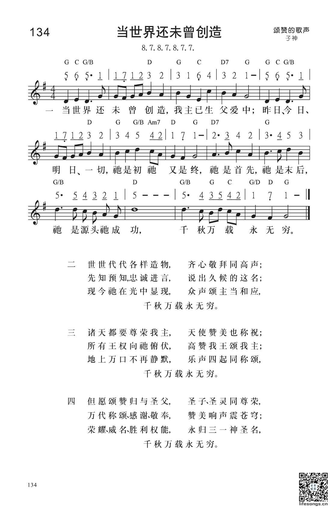
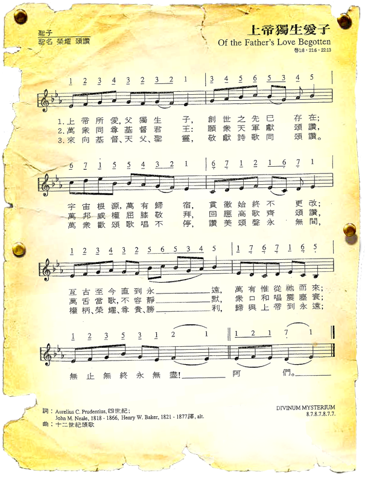

0078 Of the Father's love begotten _ Prudentius 當世界還未曾創造 ▲ DIVINUM
MYSTERIUM
| 簡介
Of the
Father’s Love Begotten |
Seldom has the wonder of the
Incarnation been expressed so beautifully as in this text, created in
the era when the Apostles’ and Nicene Creeds were being codified and
mindful of similar theological affirmations.
It is set here to a plainchant melody from the late Middle Ages. |
|
|
當世界還未曾創造 Of the Father’s Love Begotten |
|
1 Of the Father's love begotten
ere the worlds began to be,
he is Alpha and Omega,
he the Source, the Ending he,
of the things that are, that have been,
and that future years shall see,
evermore and evermore!
2 O that birth forever blessed,
when the Virgin, full of grace,
by the Holy Ghost conceiving,
bore the Savior of our race;
and the babe, the world's Redeemer,
first revealed his sacred face,
evermore and evermore!
3 This is he whom heav'n-taught singers
sang of old with one accord,
whom the Scriptures of the prophets
promised in their faithful word;
now he shines, the long expected;
let creation praise its Lord,
evermore and evermore!
4 O ye heights of heav'n, adore him;
angel hosts, his praises sing:
all dominions, bow before him
and extol our God and King;
let no tongue on earth be silent,
ev'ry voice in concert ring,
evermore and evermore!
5 Christ, to thee, with God the Father,
and, O Holy Ghost, to thee,
hymn and chant and high thanksgiving
and unwearied praises be,
honor, glory, and dominion
and eternal victory,
evermore and evermore!
Source: Trinity Psalter
Hymnal #268
|
曲：13世紀素歌
調：DIVINUM MYSTERIUM
格律：8.7.8.7.8.7.7.
詞：Aurelius Clemens Prudentius
譯：楊蔭瀏譯、羅炳良修(1-2節)，羅炳良(3節)
詩集：《世紀頌讚》125
當世界還未曾創造，聖子已誕父愛中，
主先見宇宙之原始，主預知宇宙之終；
古今後世萬象紛紜，
主是源流主是宗，千秋萬載永無窮。
天上萬眾均當拜主，天使均當頌主功；
地上邦國均當敬主，上帝、君王受尊崇；
唇舌歌喉不容靜默，
眾聲頌主當和應，千秋萬載永無窮。
但願頌讚歸與聖父，聖子、聖靈同尊榮，
萬代稱頌、感謝、敬奉，讚美響聲震蒼穹；
榮耀、威名、勝利、權能，
永歸三一神聖名，千秋萬載永無窮。 |
|

https://www.lifesongs.cn/hymns/s134/

|
| |
|
http://www.christianweekly.net/2001/ta4574.htm
第 1947 期（2001
年 12 月 16 日） ◎ 文林 ◎ 蕭柔婕
聖詩聖歌是人在上帝面前領受真理和恩惠，轉化為詩辭和音樂來表達。這詩辭和音樂的創作，一方面表示了人的明白領受，感恩讚頌；另一方面反映了上帝的恩慈和旨意，叫後來的聽眾和歌唱者藉詩辭、音樂發現神的真實和偉大，具體地看見神的美善、慈愛、和能力。歌不單是感情的表達，歌更加是懷抱著神觀，保存著神學，讓人認識神。優質的聖詩讓人在正確的觀念裡認識祂。
「當世界還未曾創造」一詩的創作原為叫人正確地認識耶穌，呼籲世人向這位與父同位、誕降人間的尊貴聖子共獻崇敬讚頌。現今在廿一世紀，我們承接著教會歷史和神學的寶貴資產和智慧研究，以致我們能按著基督的原來的身分，本質，和與父的關係來認識祂。
但在初期教會至四、五世紀間，對於：「耶穌基督是誰?」一問題仍眾議紛紜，異端興旺。普羅大眾對於耶穌基督雖有真誠渴慕和尋求，卻礙於缺乏交通和科技，沒有客觀研究和全面討論的機會；「耶穌是誰?」成為了神學家和百姓共同尋索的困惑議題。
普丹西奧Aurelius C. Prudentius 寫作了「當世界還未曾創造」七節的聖詩，為耶穌基督的身分本質、與父神關係找出定位。
-
聖子與父神共存，宇宙創造以先已與父同在，祂是自有永有，在聖父愛裡誕降。
天軍天使稱頌聖子，地上萬民尊崇上主，天上地下齊獻頌讚。
-
聖父、聖子、聖靈同受尊榮，感恩讚頌響徹穹蒼，願尊貴、榮耀、權能、勝利永歸三一真神!詩歌之原文是四世紀的拉丁文。
-
文辭開始，描繪基督與父神的永存之恆久，在創世之前已在。
作者運用了積極的方法，正面直接地刻劃基督，而無須針對性地對抗異端，更不須負面地否定敵人。其內容中肯真確，高雅莊重地歌頌耶穌的神性奧妙，與父共享永恆與創造，配受至高之處和世間一切的崇敬讚美。
在生命聖詩的第三節裡，本來的詩詞頌揚聖子與父原為一，具有同質Consubstantial 和 永恆共存
Co-eternal，應和了325年尼西亞會議裡的三位一體的教義信念。
（再來一個遊戲：四世紀時有數個盛行的異端，本聖詩在基督論上是對衡哪一個異端？答中者獲早期教會歷史獎。2）
聖詩採用了一個十二世紀的素調 Divinum Mysterium，加上樂律和節奏，成為我們今日頌唱古樸典雅的旋律。原為素調，所以可按著文字的重輕，和音節之長短來同聲齊唱，節奏可自由舒展收緩，讓朗誦式的歌辭口語化地徐徐流露。生命聖詩之翻譯文辭典雅工整，精煉流暢，意思清晰明白，幫助歌者進入聖詩壯闊宏大的意境。
1 《生命聖詩》。香港：宣道出版社，1988。
2 答案將顯示在下期「樂在筆言中」。
- 上期答案：「當世界還未曾創造」，對衡當時的亞流派。
撰文／ 譚子舜牧師
在基督教歷史中，我們發現聖詩不單用來歌頌讚美上帝，有時它更兼具真理教導和抵抗異端的功能，這情形在文盲率高企和未有《聖經》印刷的早期教會尤為明顯。在今天香港仍被廣泛使用的詩集中，我們找到這首源自早期教會的聖詩—「上帝獨生愛子」註1；英文譯名是Of
the Father’s Love Begotten。作詞人AureliusPrudentius Clemens (348~413)
是一位生於西班牙的基督徒詩人，至於曲子則選用是一首中世紀的素歌(chant)調子Divinum Mysterium，聽來給人古樸、遙遠、優美的韻味。註2

註1： 本文引用的是香港證主出版社《恩頌聖歌》第81首的中譯版本。註2： 讀者可到youtube輸入Of the Father’s Love
Begotten，便能聽到很多這歌的錄音和演出。
在Aurelius身處的四世紀，教會正面臨異端教派亞流主義(Arianism)
的威脅，他們引用歌羅西書1：15「愛子是那不能看見之神的像，是首生的，在一切被造的以先。」提倡耶穌基督既是出生的，他也是被造之物，基督的本質只是與父神相似，而非相同；因此，聖子的「神性」次等於聖父。其實，經文所言的「首生」(the
firstborn)並不是指時間上的居先，而是地位上的超越，並且基督並非受造，因為經文的下一節清楚表明「因為萬有都是靠祂造的⋯⋯
」這「萬有」應指神以外所有被造之物，否則經文大可用「其餘萬有」來把基督作為第一個被造的存有和其它受造之物清楚地分別出來。歌詞第一節便是以耶穌基督的先存性和永存性作為頌讚的焦點：「創世之先己存在，宇宙根源，用歌聲抵禦異端
萬有歸宿，貫徹始終不更改⋯⋯ 」而到了第三節，詩人更把耶穌的位置刻意放在與聖父和聖靈同等的崇高程度中：「來向基督、天父、聖靈，敬獻詩歌同頌讚⋯⋯
」信眾透過唱誦這些歌詞，他們在不經意間已把亞流主義送上一巴掌，那就是說耶穌基督既先於宇宙的出現，又仍然繼續存在於宇宙的終結之後，試問一位次等的神或被造的神能夠當得起這樣的描述嗎？明顯地，耶穌基督是真正完全的神！事實上，公元325年的尼西亞大公會議已判定亞流為異端，並且教會領袖們藉著尼西亞信經再次確認耶穌基督與父神同等的神性。或許，我們可透過這信經的幾行文字來加深體會「上帝獨生愛子」這歌的創作時代，欣賞音樂創作人如何努力地嘗試把神學融入教會崇拜的歌唱中：我信獨一上帝，全能的父，創造天地的，並造有形無形的萬物的主。我信獨一主耶穌基督，上帝的獨生子，在萬世之前，為父所生，從神出來的神，從光出來的光，從真神出來的真神，受生的，不是被造的，與父一體的；萬物都是藉著主受造的……原來，唱歌不單可以抒情，還可以用來抗敵！
https://www.yanfook.org.hk/channel_details?type=channel&cat=1&pkey=5
Words: Aurelius Clemens Prudentius (b. _____, 348; d. circa _____,
413); English translation, John Mason Neale (b. Jan. 24, 1818; d. Aug.
6, 1886), and Henry Williams Baker (b. May 27, 1821; d. Feb. 12, 1877)
Music: Divinum Mysterium, a plainsong melody from the
twelfth century; called a “Santus trope,” a musical interjection in the
medieval liturgy.
Links:
Wordwise Hymns (John
Neale, Henry
Baker)
The Cyber
Hymnal
Hymnary.org
Note: Prudentius, a Spaniard from a prominent family, studied law and
eventually became a judge. But at the age of 57 he turned from worldly
pursuits, spending the rest of his life in meditation and prayer. In
Latin, the first line of the hymn is “Corde natus ex parentis ante mundi
exordium.” Baker’s work produced nine stanzas, Neale’s six, but most
hymnals seem to use only CH-1, 6, and 9.
CH-1) Of the Father’s love begotten, ere the worlds began to be,
He is Alpha and Omega, He the source, the ending He,
Of the things that are, that have been,
And that future years shall see, evermore and evermore!
Here is a hymn, some sixteen centuries old, that calls
on us to praise the Lord Jesus Christ, and, indeed, the triune Godhead.
Its great age reminds us that the body of Christ is something really,
really big, stretching, as it does, through two thousand years of time,
and to many countries around the globe.
The opening line of the hymn deserves comment. We use words such as
begetting and begotten to refer to human birth. They indicate a point in
time at which a new, independent life on earth began. But that does not
fit what the Bible says about the Son of God, “whose goings forth are
from of old, from everlasting” (Mic. 5:2). The relationship between God
the Father and God the Son did not have a point of beginning as human
progeny does. Christ had no beginning and He has no ending.
There are certainly things about the Godhead that are beyond our
ability to understand, such as the Trinity (cf. Matt. 11:27). We worship one
God eternally existing in three Persons.
Christ is distinct in His Person from the Father and the Holy Spirit,
yet fully equal in His attributes to the other two. For that reason, it
is more accurate to speak of Christ’s eternal generation, as the only
Son, eternally brought forth from the Father.
When the Bible speaks of the Lord Jesus as “the only begotten of the
Father,” or “His only begotten Son” (Jn. 1:14; 3:16), the expressions do
not describe His beginning, but rather His uniqueness. They identify Him
as the one and only Son of God in a special sense. Christians are called
sons of God too (Gal. 3:26), as are angels in the book of Job. All are
brought into being by an act of God. But as the term is used of Christ
in relation to His heavenly Father, there is no other like Him.
We can see this uniqueness applied at the human level too. Isaac is
described in Hebrews as Abraham’s “only begotten son” (Heb. 11:17). But
we know from Genesis that Abraham’s son Ishmael was born before that
(Gen. 16:1-4, 11). Isaac was not the “only begotten” the way we might
use that term. However, he was the only son of the covenant, the only
one through whom “all the nations of the earth shall be blessed” (Gen.
26:3-4). He was the unique son of Abraham, a son like no other.
As noted above, the term “sons of God” is used of angels in the book
of Job (Job 38:4-7). Angels are powerful spirit beings, yet they reject
worship, reminding John that only deity is worthy of worship (Rev.
22:8-9). The summons is given for all in the spirit realm to praise the
Lord. In a number of places in the Word of God the angels are called to
worship Him (Ps. 103:20-21; Ps. 148:2; Heb. 1:5-6; Rev. 5:11-13). Once
again it points to the uniqueness of the Son of God.
CH-6) O ye heights of heaven adore Him; angel hosts, His praises
sing;
Powers, dominions, bow before Him, and extol our God and King!
Let no tongue on earth be silent,
Every voice in concert sing, evermore and evermore!
Appropriate, then that the hymn concludes with a call to people
everywhere, men, women and children, to worship the Lord, in fact the
triune Godhead.
8) Thee let old men, thee let young men, thee let boys in chorus
sing;
Matrons, virgins, little maidens, with glad voices answering:
Let their guileless songs re-echo,
And the heart its music bring, evermore and evermore!
9) Christ, to Thee with God the Father, and, O Holy Ghost, to Thee,
Hymn and chant with high thanksgiving, and unwearied praises be:
Honour, glory, and dominion,
And eternal victory, evermore and evermore!
Questions:
1) What do you think the holy angels felt as they learned about the
incarnation of the Son of God?
2) What, in your understanding of God’s Word, did the Lord Jesus set
aside or temporarily surrender, when He came to earth the first time?
Links:
Wordwise Hymns (John
Neale, Henry
Baker)
The Cyber
Hymnal
Hymnary.org
http://www.congsing.org/of_the_fathers_love.html
Aurelius Clemens Prudentius, 4th c.; trans. by John Mason Neale, 1854; rev. by
Henry Williams Baker, 1859
Addressed to one another, angels, and the Trinity
|
Of the Father’s love begotten |
Ps. 2:7; John 3:16; 1 John 4:9; Nicene
Creed |
|
ere the worlds began to be, |
John 1:2 |
|
he is Alpha and Omega, |
Is. 44:6; Rev. 22:13 |
|
he the Source, the Ending he, |
John 1:3; Col.1:16–20; Heb. 1:2; 5:9 |
|
of the things that are, that have been, |
Eph. 1:10 |
|
and that future years shall see, |
|
|
evermore and evermore! |
Heb. 1:8 |
|
|
|
|
Oh, that birth forever blessed, |
Luke 1:42 |
|
when the Virgin, full of grace, |
Luke 1:27–28 |
|
by the Holy Ghost conceiving, |
Matt. 1:18, 20; Luke 1:35 |
|
bore the Savior of our race; |
Matt. 1:21; 2 Tim. 1:10; 1 John 4:14 |
|
and the babe, the world’s Redeemer, |
1 Tim. 2:6; Rev. 5:9b |
|
first revealed his sacred face, |
2 Cor. 4:6; Col. 1:15; Heb. 1:3 |
|
evermore and evermore! |
|
|
|
|
|
This is he whom heav’n-taught singers |
Is. 9:6; Mic. 5:2 |
|
sang of old with one accord, |
Luke 1:70 |
|
whom the Scriptures of the prophets |
Rom. 1:2 |
|
promised in their faithful word; |
Is. 7:14; Jer. 23:5–6; Mal. 3:1 |
|
now he shines, the long-expected; |
Gen. 3:15; Luke 1:78–79; Eph. 5:14 |
|
let creation praise its Lord, |
Ps. 69:34; Is. 44:23 |
|
evermore and evermore! |
|
|
|
|
|
O ye heights of heav’n, adore him; |
Ps. 148:1; Is. 49:13 |
|
angel hosts, his praises sing; |
Ps. 148:2; 103:20–21; Rev. 5:11–12 |
|
all dominions, bow before him |
Zeph. 2:11; Eph. 1:21 |
|
and extol our God and King; |
|
|
let no tongue on earth be silent, |
Ps. 145:21 |
|
ev’ry voice in concert ring, |
Rev. 5:13 |
|
evermore and evermore! |
|
|
|
|
|
Christ, to thee, with God the Father, |
|
|
and, O Holy Ghost, to thee, |
|
|
hymn, and chant, and high thanksgiving, |
Col. 3:16 |
|
and unwearied praises be, |
Luke 2:37 |
|
honor, glory, and dominion, |
Jude 25 |
|
and eternal victory, |
1 Chron. 29:11 |
|
evermore and evermore! |
|
The Oxford Movement of the mid-19th century tried to draw Anglicanism
back toward its Roman Catholic roots. Those who supported the movement were
doubtless encouraged by the medievalist tendencies of Victorian England. We
now live in an age that has revived both Tolkien’s Middle-earth and Classical
Christian (read “Medieval”) education, which is to say that we have
medievalist tendencies of our own. And like 19th-century England, we are
likely to conflate all things after pagan Rome but before Medici Florence into
one heap, making distinctions only when they are convenient to our tastes. But
the hymn printed above, though set to a modified version of a medieval chant,
is really late Antique.
Aurelius Clemens Prudentius (348-c.413), whose ideas are magnificently
retained in John Mason Neale’s translation, was the poetic inheritor of
Virgil, not Dante, and had a mind trained on the logic of Cicero, not the dark
allegories of the Scholastics. One cannot help but wonder at this hymn’s
inclusion into mainline hymnals, many of which have excised or radically
modified hymns because of their offensively straightforward message. Is this
hymn’s inclusion there simply to be justified by an irrational affection to be
found in the liberal high church toward things that are medieval? If so, the
hymn is sure to disappoint upon a moment’s reflection, for what could be
further from, say, the ramblings of the Marian Antiphons than this compact
hymn on Christ. The poetics of late antiquity require us to make connections
in ideas over time, but the connections are there to make—unlike the vague
mysticism of some medieval poetry. Indeed, the hymn’s only mysticism is
related to its subject—the eternal begetting of Christ by God the Father. But
the hymn does its best to clarify this idea so often thought of as beyond our
purview.
The first stanza describes Christ as begotten of God’s love before the
worlds, which would suit Arian as well as Orthodox. But Prudentius lived in
the second generation of the Arian controversy and knew better than to let
this line stand alone. Christ is not only begotten before the worlds began, he
is much older still. He is the Alpha and the Source of the things that have
been. He is Creation’s Lord (stanza 3). He is God (stanza 4). He is the one
whose name begins the
Trinitarian blessing of stanza 5.
Stanza 1 introduces the Christ, eternally begotten of the Father, while
stanza 2 introduces Jesus of Nazareth, born of the Virgin Mary. But the Son of
God and Jesus of Nazareth are the same in every way, so stanza 3 tracks
Christ’s worship from the prophets to his Advent—or is it his Resurrected
Glory that we meet in stanza 3, line 5? We are not to distinguish, because
Christ is the same yesterday, today, and forever—saeculorum
saeculis (though this refrain, which Neale translates “evermore and
evermore” was an 11th century addition).
In light of this truth—that Jesus of Nazareth is Christ our God—we ask all
creation to worship him. The hymn is as logically tight as it can be, given
its subject. Christ is begotten of God’s love, but exists before all things.
He nevertheless takes human form through the womb of the Virgin, and in doing
so reveals to us the very love of God through which he was begotten. He has
been the object of praise “of old,” was praised throughout recorded history,
and is now to be the object of praise for all creation along with the other
two members of the Godhead.
The hymn, first widely circulated in English in a hymnal strongly influenced
by the Oxford movement, retains Prudentius’s ideas but offers its own poetic
beauties to make itself as memorable in translation as it was in the original.
We make room to mention only two. Notice the inversion of the word order in
stanza 1, line 4. Of course it creates the rhyme against the second line but
it also creates a palindrome, where “he” begins and ends the line just as He
begins and ends all things. Notice also how the alliterative “b” sounds tie
together the first and second stanzas, creating unity between the stanza on
Christ’s eternal nature and the one on his incarnation.
The tune DIVINUM
MYSTERIUM developed, as did many chants, as an ornament on an existing
chant (what music scholars describe as a “trope”). This is apparent in the
similarity of its seven phrases, all of which involve arch shapes. But each
arch is different and the differences relate well to the relative placement of
the text in each stanza. The highest arch sets the third line of each stanza
where we sing “Alpha and Omega” but also “Holy Ghost conceiving” and
“chant and high thanksgiving.” The fifth arch is really the smallest one,
involving only six notes, but it compensates for its brevity with a six-note
extension that hovers around the dominant (that is, around the fifth
scale-degree, or “sol”). Thus the tune’s fifth line is internally divided,
just like the ideas of the fifth line in all but the fourth stanza.
Chant is not a congregationally conceived music. The earliest printed form of
the tune (1582) prescribes for the chant a jaunty dance rhythm in three, which
would doubtless make it easier for congregational song.

Some modern hymnals even use this rhythm, which—sounding more like that of a
Reformation hymn-tune—perhaps undoes the quasi-medievalism that might allow
some singers to treat this song as a “cultural experience” rather than as a
vehicle by which congregants can speak truth to one another. Nevertheless, we
recommend the rhythm of even eighth-notes found in the Trinity
Hymnal.

It’s doubtful that the average congregant identifies the declamatory rhythm
with the Middle Ages (or that he’d be distracted by that association). Healthy
cultures of congregational singing don’t limit themselves to the rhythms of
dance but employ a variety of rhythmic approaches serving a variety of
communicative purposes. In this hymn, as in “Let All Mortal Flesh Keep
Silence” and “Oh, Come, Oh, Come, Emmanuel,” the subtle freedom of a
chant-like yet accessible rhythm focuses attention on the words, even as a
sobering contrast to the jauntier rhythms of other hymns communicates awe and
reverence appropriate for the mystery of the eternal begetting of Christ by
God the Father.
https://hymnary.org/text/of_the_fathers_love_begotten
In the early fourth century, one of the greatest controversies in the church
came to a breaking point, and the Emperor Constantine called together the First
Council of Nicea to establish once and for all the Church’s official stance on
the nature of the Trinity. The council condemned the teaching of Arius, who
believed that Jesus was not of the same nature as God the Father. The Nicene
Creed was thus written as a statement of faith that God the Father, God the Son,
and God the Spirit are all of the same nature, three and yet one. Prudentius’
hymn, “Of the Father’s Love Begotten,” addresses this belief in the Trinity in
the very first line. It is very clear from his text that Christ is both human
and divine, and rather than simply being made by God, he was “begotten” of the
very same substance. As we sing this hymn, we both affirm and align our faith
with the broader faith of the Church, and we deny any belief that says that
Christ is not fully divine. This hymn, so often associated with Christmas, is
thus a hymn of proclamation, calling us to sing out our faith – “every voice in
concert ring, evermore and evermore!”
Text:
In the beginning of the fifth century, Aurelius Clemens Prudentius began his
major work, Liber Cathemerinon, containing twelve long poems, one for
each hour of the day. Lines selected from the ninth of these poems made up this
eight-stanza hymn which Albert Bailey describes as a “fighting hymn,” since the
words directly attack the heresy of Arius, who claimed that Christ did not have
the same nature as God (The Gospel in Hymns, 223). The first stanza
claims that Christ is in fact “begotten” of God, and the remainder of the verses
explain Christ’s nature by alluding to the prophesies of His birth, the event of
His birth, and praise of Christ and the Triune God.


https://stonedcampbelldisciple.com/2009/12/16/aurelius-clemens-prudentius-an-ancient-christmas-hymn/
There are a number of differences in the text between different hymnals. The
most common difference is the inclusion or exclusion of a verse beginning, “This
is he whom heav’n-taught singers…,” often included as the third verse. Other
differences include the change from archaic to modern language, or references to
“the Virgin” versus “a virgin.”
Tune:
DIVINUM MYSTERIUM is a plainsong melody from a Sanctus that most likely comes
from the thirteenth century. Some hymnals keep the original unmeasured form of
the chant, while others use a triple-meter that was introduced in 1582. Like any
chant, this hymn is particularly beautiful when sung a cappella, or with a very
light accompaniment that simply provides a foundation upon which the voices can
rest. It would be very appropriate to have a choir sing this hymn – there are a
number of beautiful choral arrangements, not the least of which is one written
by Paul Wohlgemuth.
When/Why/How:
This hymn is most often sung at Christmas time, but only the second verse
actually refers to the nativity story, and so without that verse, it could be
sung throughout the year. It would be especially fitting during a service about
the miracles of Christ (or Epiphany season), or as a hymn of response to the
recitation of the Nicene Creed. The fourth and fifth verses also make a
wonderful doxology for the closing of a service.
Notes
Scripture References:
st. 1 = Rev. 22:13, Rev. 1:8, Rev. 21:6, Ps. 2:7, Heb. 1:5
st. 2 = Luke 1:35, Luke 2:11, Matt. 1:18, 21
st. 3 = Luke 1:70
st.4 = Ps. 148:1-2, Ps. 150:6
This hymn, with very
ancient roots, is a confession of faith about the Christ, the eternal Son of
God, whose birth and saving ministry were the fulfillment of ancient
prophecies (st. 1-3).
The final stanzas are a
doxology inspired by John's visions recorded in Revelation 4-7 (st. 4-5).
The text is based on "Corde natus ex parentis," a Latin poem by Marcus
Aurelius C. Prudentius (b.Saragossa[?], Northern Spain, 348; d. c. 413).
Prudentius was the
greatest Christian poet of his time. We know little of his life–only what he
tells us in his own writings. He received a fine education, served as a
judge and "twice ruled noble cities." He also tells of an appointment at the
imperial court in Rome. But at the age of fifty-seven Prudentius bade
farewell to this successful, prosperous life and vowed to spend the rest of
his days in poverty. He served the church by meditating and writing,
presumably at an unnamed monastery. All of his writings are in poetic form,
including learned discussions in theology and apologetics. Most of the
English hymns derived from his works, including "Of the Father's Love
Begotten," were taken from his Liber Cathemerinon (c. 405),
which consists of twelve extended poems meant for personal devotions, six
for use throughout the hours of the day and six for special feasts.
Working from the Latin
text, John Mason Neale (b. London, England, 1818; d. East Grinstead, Sussex,
England, 1866) prepared a translation and published it as a six-stanza hymn
in his The Hymnal Noted (1854). He retained the refrain
"Evermore and evermore," an eleventh-century addition to the original Latin
text.


J. M. Neale
H. W. Bake
Neale's life is a study in
contrasts: born into an evangelical home, he had sympathies toward Rome; in
perpetual ill health, he was incredibly productive; of scholarly
temperament, he devoted much time to improving social conditions in his
area; often ignored or despised by his contemporaries, he is lauded today
for his contributions to the church and hymnody. Neale's gifts came to
expression early–he won the Seatonian prize for religious poetry eleven
times while a student at Trinity College, Cambridge, England. He was
ordained in the Church of England in 1842, but ill health and his strong
support of the Oxford Movement kept him from ordinary parish ministry. So
Neale spent the years between 1846 and 1866 as a warden of Sackville College
in East Grinstead, a retirement home for poor men. There he served the men
faithfully and expanded Sackville's ministry to indigent women and orphans.
He also founded the Sisterhood of St. Margaret, which became one of the
finest English training orders for nurses.
Laboring in relative
obscurity, Neale turned out a prodigious number of books and artic1es on
liturgy and church history, including A History of the So-Called
Jansenist Church of Holland (1858); an account of the Roman Catholic
Church of Utrecht and its break from Rome in the 1700s; and his scholarly Essays
on Liturgiology and Church History(1863). Neale contributed to church
music by writing original hymns, including two volumes of Hymns for
Children (1842, 1846), but especially by translating Greek and Latin
hymns into English. These translations appeared in Medieval Hymns and
Sequences (1851, 1863, 1867), The Hymnal Noted (1852,
1854), Hymns of the Eastern Church (1862),
and Hymns Chiefly Medieval (1865). Because a number of Neale's
translations were judged unsingable, editors usually amended his work, as
evident already in the 1861 edition of Hymns Ancient and Modem;
Neale claimed no rights to his texts and was pleased that his translations
could contribute to hymnody as the "common property of Christendom."
The story of "Of the
Father's Love Begotten" continues with the 1859 nine-stanza revision by
Henry W. Baker (b. Vauxhall, Lambeth, Surrey, England, 1821; d. Monk1and,
England, 1877), published in Hymns Ancient and Modern (1861).
Educated at Trinity College, Cambridge, Baker was ordained in the Church of
England in 1844. He became the vicar of the Monkland parish in 1851, where
he remained until his death. Because of his high-church beliefs in the
celibacy of the clergy, Baker was unmarried. In the history of hymnody Baker
is well known as the editor and chairman of the committee that compiled Hymns
Ancient and Modern, the most significant British hymnal of the
nineteenth century. Baker devoted at least twenty years of his life to this
endeavor.
Considered an autocratic editor in his time, Baker freely changed hymn
texts, but man' of his decisions have proven themselves over time. The 1875
edition of Hymns Ancient and Modern contained thirty-three of
Baker's original hymns and translations.
Liturgical Use:
Christmas season; without stanza 2 on many other occasions; because the
original Latin poem concerns Christ’s miracles, could be sung during
Epiphany or at worship services when the New Testament gospel is preached;
stanza 4 and 5 make a fine doxology for the close of any service.
https://www.crosspurposes.ca/the-story-behind-the-hymn/
Of the Father’s Love Begotten
[as published in the Advent/Christmas 2018 issue of The
Anglican Digest]
Meditation upon a Christmas hymn: Confessing the Faith

Of the Father’s Love Begotten
Prudentius c. 400 Latin
Tr. by Rev. J.M. Neale 1854 & Rev. H.W. Baker 1861
DIVINUM MYSTERIUM 11th century
The hauntingly beautiful “Of
the Father’s Love Begotten” transports us into the very Mystery of the
Incarnation by a tune fittingly titled, “Divinum
mysterium.” Unlike its jauntier carol cousins I don’t ever recall it being
captured as mall Christmas ‘muzak.’

"AURELIUS PRUDENTIUS CLEMENS (348-ca.415). Poet. "Works" by Aurelio Prudencio.
Illustrated sheet that deals with the topic of lust. Manuscript of the 11th c.
Miniature Painting. FRANCE. Paris. National Library.".
The hymn is a perfect liturgical ‘pairing’ with the traditional Christmas Gospel
of John. Both draw us to peer into ‘the story behind the story’ –“The Word was
made flesh…and we beheld His glory!” It also is a fitting accompaniment to our
confession of the Faith in the Nicene Creed, and our joining in the song of the
angels for the Holy Nativity, the Gloria
in Excelsis, both part of our Christmas services.
This hymn feels like a fulfillment of the equally haunting and ageless Advent
hymn, O
Come, O Come, Emmanuel and the prelude to
other timeless hymns of the Faith like St
Patrick’s Breastplate. Hearing, and better still, singing these great
ancient hymns allows us to feel a part of something infinitely bigger, older,
deeper and grander. They take us out of ourselves and place us in the Presence
of the Living God. They convey us, while still very much grounded in this world
He loves so much, to the experience of the transcendent, numinous and,
literally, awe-inspiring. They stir in us something at once strange and yet
richly familiar as our deepest being resounds with the recognition of ‘the image
of God’ and reaches out to grasp it in Him who is the very express image of the
Father and descends to our plane to reach out to us with infant hands.
Let’s reflect, verse by verse, on this hymn reclaimed from the Early Church for
us by the ingenious mind and pastoral heart of its translator, the Reverend John
Mason Neale. In doing so, let’s interweave it with words from the Nicene Creed,
the Gloria
in Excelsis, and the Liturgies of the Church. In this way Scripture,
Hymnody, Creed and Liturgy can re-echo and resound upon each other in our hearts
and minds and voices.
Verse 1. Our creedal faith in Christ tells us He is “the only-begotten
Son of God, Begotten of the Father before all worlds; God, of God; Light, of
Light; Very God, of Very God; Begotten, not made; Being of one substance with
the Father;” We can understand one generation being ‘begotten’ by the previous
one – in
time. But this begetting of Equal by Equal, with no before or after, no
greater or lesser, is far beyond our understanding, yet without accepting this
deep mystery of our Faith, none of the New Testament, or the life of the Church
makes sense and calling Jesus “Alpha and Omega” would be unutterable blasphemy.
Accepting the Mystery of the eternally begotten One, we now rightly praise the
Son conceived in Mary’s womb as God’s Son too, and truly, “Beginning and End” –
her Lord and ours, Evermore and evermore.
Verse 2. “Through whom all things were made” Nicaea’s Creed declares
about this Eternally-begotten Son. And our hearts echo that Truth back in the
hymn’s words, “at His word the worlds were framed.” Looking up at starry (or
snowy) heavens on Christmas Eve we see age-old wonders of the sky, manifesting,
here on ‘our fragile island home,’ the re-echoing throughout the cosmos of the
results of “He commanded; it was done.” The Uncreated Light bathes us in
remotest starlight that can take over 13 billion years to reach us, travelling
at 186,000 miles per second, while tending this garden He has put under our
stewardship “beneath the shining of the moon and burning sun.” Evermore and
evermore.
Verse 3. When we confess, “Came down from heaven, And was incarnate by
the Holy Ghost of the Virgin Mary, And was made man,” many outwardly (and all
should inwardly) ’bend the knee.’ Of course, “that Birth for ever blessed” we
sing of is the result of the holiest ‘pregnant pause’ ever, since we must never
forget that the Incarnation truly begins at
the very moment of the virgin-Conception of that tiny seed growing in Blessed
Mary, coming to happy fruition when “the Babe, the world’s Redeemer, first
revealed His sacred face.” Evermore and evermore.
Verse 4. A centuries-long line of prophecies come to fulfilment at
Christmas. Zechariah is the one who prophesied the last Prophet, his own son,
John the Baptist, proclaiming in his Spirit-filled song that, “the Lord God of
Israel…hath visited, and redeemed his people…As he spake by the mouth of his
holy Prophets, which have been since the world began.” We too confess, in our
Creed, that the Holy Spirit has “spoken through the prophets.” In song we offer
thanks to “the long-expected,” as Creation praises its Lord. Evermore and
evermore.
Verse 5. Our creed confesses God as “Maker of heaven and earth, And
of all things visible and invisible.” This speaks chiefly (besides strange
new things that science investigates, such as dark matter) of the angelic realm.
As with the Gloria
in Excelsis, we are caught up into the celebration of the angelic hosts
that praise “our God and King.” We, like shepherds and magi of old, are called
to join with them in adoration at this festival of heaven come to Earth. “Let no
tongue in earth be silent,” but let every voice “in concert sing.” Evermore and
evermore.
Verse 6. This verse continues the theme of the whole Creation,” visible
and invisible,” joining in unending adoration. Here, “all sorts and conditions”
of people, old and young, are called, “with glad voices answering,” to “let
their guileless songs re-echo” those of the angels. This calls us to take our
part, as living members of His “One, Holy, Catholic and Apostolic Church” to
render His most worthy praise. Evermore and evermore.
Verse 7. We end, fittingly, with a doxology, or praise of the Most Holy
Trinity. The Son, being eternally “Begotten of the Father,” and now, “incarnate
by the Holy Ghost of the Virgin Mary,” is worshipped by heaven and Earth in
concert as the same One who “shall come again with glory” in the “eternal
victory” of that kingdom “that shall have no end.” Let us all offer our “high
thanksgiving” with “unwearied praises” for this Christ, Son of the Living God,
who is now, by His Holy Incarnation and Blessed Nativity, also our very
Brother. Let us continue, unworthy as we are, to offer this “our sacrifice of
praise and thanksgiving” – not just throughout the great Twelve Days of
Christmas, but truly, Evermore and evermore. AMEN!
https://www.umcdiscipleship.org/resources/history-of-hymns-of-the-fathers-love-begotten
"Of the Father’s Love Begotten"
Aurelius Clemens Prudentius, translated by John Mason Neale
The United Methodist Hymnal, No. 184
“Of the Father’s love begotten,
Ere the worlds began to be,
He is Alpha and Omega,
He the source, the ending he
Of the things that are, that have been
And that future years shall see,
Evermore and evermore.”
This is perhaps the oldest hymn that many congregations sing. Aurelius
Prudentius Clemens (348-c. 413) was a Spanish poet and successful lawyer who
became a judge. He did not begin writing poetry until the age of 57. As one can
imagine, a text this old comes to us in our hymnals today with much assistance
down through the ages.
Fred Gaely, a Methodist hymn scholar and seminary professor, confirms that
Prudentius was “the first great poet of the Latin church.” The text was excised
from a longer work, Hymnus omnis horae (a hymn for all hours), the first line of
which was “Da puer plectrum,” in the Liber Cathemerinon (Book in Accordance with
the Hours or Book of the Christian Day). The Book of Cathemerinon consisted of a
collection of 12 hymns for the hours of the daily offices followed in the
monasteries of the time.
Hymnologist Albert Bailey, who calls Prudentius “the earliest Christian writer
who was a real poet,” states that this is a “fighting hymn.” During the fourth
century, C.E., what has become orthodox theology was fighting for its life
against attacks by heretical perspectives.
One of the most prominent heresies was propagated by Arius (c. 250-336),
whose most controversial position—and the one relevant to our hymn—was that God
the Father and the Son did not co-exist throughout eternity. This heresy states
that before his incarnation, Jesus was created by God and therefore Jesus did
not exist through all time. Jesus was a creature (“created being”) that, though
divine, was not equal to the Father.
Christian hymns have been used for polemical purposes throughout history, and
this is perhaps the first great such hymn. In a beautiful poetic form,
Prudentius applies his legal skills to make a case for what has become the
orthodox understanding of the Trinity.
From the first line of stanza one,
“Of the Father’s love begotten” (“Corde natus ex parentis ante mundi
exordium”—literally “Born from the parent’s heart before the beginning of worlds
(time)”—Prudentius sets forth his argument that the Son has always, is always
and will always be with God and us.
To emphasize this, the poet adds one of the great tautologies (a repetition of
an idea in different words for emphasis) in Christian hymnody, affirming three
times the premise from the first line of the hymn:
“He is Alpha and Omega,
He the source, the ending he.
Of the things that are, that have been,
and that future years shall see....”
The great 19th-century translator of classic Greek and Latin poetry, John Mason
Neale (1818-1866), shaped Prudentius’ poetry into six stanzas, adding the
refrain “Saeculorum seculis” (“Evermore and evermore”), indicating through its
repetition at the conclusion of each stanza that the existence of God with the
Son and the Spirit have been, are and will be co-eternal.
The stanzas not included in The United Methodist Hymnal (two, three and five of
the original) are the ones that give this poem a decidedly Advent/Christmas
character. Stanza three of Mason’s translation follows:
“O that birth for ever blessed
When the Virgin, full of grace,
By the Holy Ghost conceiving
Bore the Savior of our race,
And the babe, the world’s redeemer,
First revealed his sacred face,
Evermore and evermore.”
To seal the argument that the legal-minded Prudentius set forth, the remaining
stanzas in The UM Hymnal confirm that this is the true position of the
church by stating that the “heights of heaven” and “angel-hosts” adore the Son
and “powers, dominions bow before him.” Thus all of the cosmos from heaven to
earth gives witness to the co-eternal and co-equal nature of the Son—a tough
argument to speak against. The final stanza is a doxology that places Christ as
a partner in the center of the Trinity.
Our hymn was not sung to the famous tune DIVINUM MYSTERIUM originally. That
melody comes from the 11th century and was used with a different text. The
harmonization of the melody comes from The Hymnal 1940 in an arrangement by C.
Winfred Douglas, who was the musical editor of that Episcopal hymnal.
By the time this hymn comes to us in our hymnal, it has traveled an amazing
journey through 17 centuries and at least four countries: a Latin poem from a
Catholic Spanish poet in the fourth century, a tune from Italy in the 11th
century, a translation from an Anglican in 19th-century England and a
harmonization in the 20th century by an American Episcopal musician.
Our hymn comes full circle with the Spanish translation by Argentinean Methodist
Bishop Federico Pagura (b. 1923), “Fruto del amor divino” (Fruit of divine
love), in the United Methodist Spanish-language hymnal, Mil Voces para Celebrar
(1996).
This is a hymn for all times and all ages that will be sung “evermore and
evermore.”
Dr. Hawn is professor of sacred music at Perkins School of Theology.
From Wikipedia, the free encyclopedia
"Of the Father's heart begotten"
alternatively known as "Of the Father's love begotten" is a doctrinal hymn based
on the Latin poem "Corde natus" by the Roman poet Aurelius
Prudentius, from his Liber Cathemerinon (hymn no. IX) beginning
"Da puer plectrum" which includes the Latin stanzas listed below.[1]
History[edit]
The ancient poem was translated and paired
with a medieval plainchant melody
"Divinum mysterium". "Divinum mysterium" was a "Sanctus trope"
– an ancient plainchant melody which over the years had been musically
embellished.[2] An
early version of this chant appears in manuscript form as early as the
10th century, although without the melodic additions, and "trope" versions
with various melodic differences appear in Italian, German, Gallacian,[clarification
needed] Bohemian and Spanish manuscripts dating from
the 13th to 16th centuries.[2]
"Divinum mysterium" first appears in print
in 1582 in the Finnish song book Piae
Cantiones, a collection of seventy-four sacred and secular church
and school songs of medieval Europe compiled by Jaakko
Suomalainen and published by Theodoric Petri.[3] In
this collection, "Divinum mysterium" was classified as "De Eucharistia",
reflecting its original use for the Mass.[4]
The text of the "Divinum mysterium" was
replaced by the words of Prudentius's poem when it was published by Thomas
Helmore in 1851. In making this fusion, the original metre of
the chant was disturbed, changing the original triple
metre rhythm into a duple
metre and therefore altering stresses and note lengths. A later
version by Charles Winfred Douglas (1867–1944) corrected this using an "equalist"
method of transcription, although the hymn is now found in both versions
as well as a more dance-like interpretation of the original melody.[2]
Translations[edit]
There are two translations commonly sung
today; one by John
Mason Neale and Henry W. Baker, and another by Roby Furley Davis.
Neale's original translation began "Of the
Father sole begotten" in his Hymnal Noted (London, 1851), and
contained only six stanzas.[5] It
was Neale's music editor, Thomas
Helmore, who paired this hymn with the Latin plainsong. Neale's
translation was later edited and extended by Henry W. Baker for Hymns
Ancient and Modern (London, 1861; below).
Dissatisfied with Neale's translation, Roby
Furley Davis (1866–1937), a scholar at St
John's College, Cambridge, wrote a new version for The
English Hymnal of 1906. Davis was assistant master at Weymouth
College and a scholar of the works of Tacitus,
especially his book on Agricola.[6] This
version was also used in the popular Carols
for Choirs series by David
Willcocks.[4]
Text and translations[edit]
Latin text by Prudentius
(born 348)[7] |
Translation by Roby Furley Davis
for The
English Hymnal (1906)[8] |
Translation by J.
M. Neale, extended
by Henry W. Baker (1851/1861)[9] |
Corde natus ex parentis
Ante mundi exordium
A et O cognominatus,
ipse fons et clausula
Omnium quæ sunt, fuerunt,
quæque post futura sunt.
Sæculorum sæculis.
|
Of the Father's heart begotten,
Ere the world from chaos rose,
He is Alpha, from that Fountain
All that is and hath been flows;
He is Omega, of all things,
Yet to come the mystic Close,
Evermore and evermore.
|
Of the Father's love begotten,
Ere the worlds began to be,
He is Alpha and Omega,
He the source, the ending He,
Of the things that are, that have been,
And that future years shall see,
Evermore and evermore!
|
Ipse iussit et creata,
dixit ipse et facta sunt,
Terra, cælum, fossa ponti,
trina rerum machina,
Quæque in his vigent sub alto
solis et lunæ globo.
Sæculorum sæculis.
|
By His Word was all created
He commanded and 'twas done;
Earth and sky and boundless ocean,
Universe of three in one,
All that sees the moon's soft radiance,
All that breathes beneath the sun,
Evermore and evermore.
|
At His Word the worlds were framèd;
He commanded; it was done:
Heaven and earth and depths of ocean
In their threefold order one;
All that grows beneath the shining
Of the moon and burning sun,
Evermore and evermore!
|
Corporis formam caduci,
membra morti obnoxia
Induit, ne gens periret
primoplasti ex germine,
Merserat quem lex profundo
noxialis tartaro.
Sæculorum sæculis.
|
He assumed this mortal body,
Frail and feeble, doomed to die,
That the race from dust created,
Might not perish utterly,
Which the dreadful Law had sentenced
In the depths of hell to lie,
Evermore and evermore.
|
He is found in human fashion,
Death and sorrow here to know,
That the race of Adam's children
Doomed by law to endless woe,
May not henceforth die and perish
In the dreadful gulf below,
Evermore and evermore!
|
O beatus ortus ille,
virgo cum puerpera
Edidit nostram salutem,
feta Sancto Spiritu,
Et puer redemptor orbis
os sacratum protulit.
Sæculorum sæculis.
|
O how blest that wondrous birthday,
When the Maid the curse retrieved,
Brought to birth mankind's salvation
By the Holy Ghost conceived,
And the Babe, the world's Redeemer
In her loving arms received,
Evermore and evermore.
|
O that birth forever blessèd,
When the virgin, full of grace,
By the Holy Ghost conceiving,
Bore the Saviour of our race;
And the Babe, the world's Redeemer,
First revealed His sacred face,
evermore and evermore!
|
Psallat altitudo caeli,
psallite omnes angeli,
Quidquid est virtutis usquam
psallat in laudem Dei,
Nulla linguarum silescat,
vox et omnis consonet.
Sæculorum sæculis.
|
Sing, ye heights of heaven, his
praises;
Angels and Archangels, sing!
Wheresoe’er ye be, ye faithful,
Let your joyous anthems ring,
Every tongue his name confessing,
Countless voices answering,
Evermore and evermore.
|
O ye heights of heaven adore Him;
Angel hosts, His praises sing;
Powers, dominions, bow before Him,
and extol our God and King!
Let no tongue on earth be silent,
Every voice in concert sing,
Evermore and evermore!
|
Ecce, quem vates vetustis
concinebant sæculis,
Quem prophetarum fideles
paginæ spoponderant,
Emicat promissus olim;
cuncta conlaudent eum.
Sæculorum sæculis.
|
This is He, whom seer and sibyl
Sang in ages long gone by,;
This is He of old revealed
In the page of prophecy;
Lo! He comes the promised Saviour;
Let the world his praises cry!
Evermore and evermore.
|
This is He Whom seers in old time
Chanted of with one accord;
Whom the voices of the prophets
Promised in their faithful word;
Now He shines, the long expected,
Let creation praise its Lord,
Evermore and evermore!
|
Macte iudex mortuorum,
macte rex viventium,
Dexter in Parentis arce
qui cluis virtutibus,
Omnium venturus inde
iustus ultor criminum.
Sæculorum sæculis.
|
Hail! Thou Judge of souls departed;
Hail! of all the living King!
On the Father's right hand throned,
Through his courts thy praises ring,
Till at last for all offences
Righteous judgement thou shalt bring,
Evermore and evermore.
|
Righteous Judge of souls departed,
Righteous King of them that live,
On the Father's throne exalted
None in might with Thee may strive;
Who at last in vengeance coming
Sinners from Thy face shalt drive,
Evermore and evermore!
|
Te senes et te iuventus,
parvulorum te chorus,
Turba matrum, virginumque,
simplices puellulæ,
Voce concordes pudicis
perstrepant concentibus.
Sæculorum sæculis.
|
Now let old and young uniting
Chant to thee harmonious lays
Maid and matron hymn Thy glory,
Infant lips their anthem raise,
Boys and girls together singing
With pure heart their song of praise,
Evermore and evermore.
|
Thee let old men, Thee let young men,
Thee let boys in chorus sing;
Matrons, virgins, little maidens,
With glad voices answering:
Let their guileless songs re-echo,
And the heart its music bring,
Evermore and evermore!
|
Tibi, Christe, sit cum Patre
hagioque Pneumate
Hymnus, decus, laus perennis,
gratiarum actio,
Honor, virtus, victoria,
regnum aeternaliter.
Sæculorum sæculis.
|
Let the storm and summer sunshine,
Gliding stream and sounding shore,
Sea and forest, frost and zephyr,
Day and night their Lord alone;
Let creation join to laud thee
Through the ages evermore,
Evermore and evermore.
|
Christ, to Thee with God the Father,
And, O Holy Ghost, to Thee,
Hymn and chant with high thanksgiving,
And unwearied praises be:
Honour, glory, and dominion,
And eternal victory,
Evermore and evermore!
|
References[edit]
-
^ Translations
from Prudentius by Francis St. John Thackeray (1890)
-
^ Jump
up to:a b c Raymond
F. Glover, The Hymnal 1982 Companion: Service Music and
Biographies, Volume 2 (Church Publishing, Inc., 1994), ISBN 978-0-89869-143-6 pp.
81–83
-
^ Jeremy Summerly, Let
Voices Resound: Songs from Piae Cantiones, Naxos 8.553578
-
^ Jump
up to:a b Willcocks,
D. (ed.), "Of the Father's heart begotten" in Carols
for Choirs 2 (London: Oxford University Press), 128–133.
-
^ Collected
Hymns, Sequences and Carols of John Mason Neale (1914)
-
^ P. Corneli Taciti
Agricola, edited with introduction, notes, and critical appendix
by Roby F. Davis, B.A., formerly scholar of St John's College,
Cambridge, assistant master at Weymouth College. Methuen & Co.
London. 1892
-
^ "Corde
natus ex parentis", Hymns and Carols of Christmas, accessed 26
November 2010
-
^ "Of
the Father's heart negotten", Hymns and Carols of Christmas,
accessed 26 November 2010
-
^ "Of
the Father's love begotten", nethymnal.org, accessed 29 May 2015
http://www.hymntime.com/tch/bio/p/r/u/d/prudentius_ac.htm
348–413
Introduction
Born: 348, Spain (either at Zaragoza, Tarragona,
or Calahorra).
Died: Probably around 413.
Biography
Prudentius (whose name is sometimes shown with a prefix of Marcus
),
was evidently born into the upper class.
After working as a lawyer, he served a judge. At age 57, he retired and
began to write sacred poetry.
Publications
-
Liber Cathemerinon
-
Liber Peristephanon
-
Apotheosis
-
Hamartigenia
-
Psychomachia
-
Libri contra Symmachum
-
Dittochæon